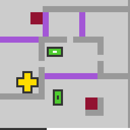

ka59
Select shelled blocks and push blocks around until every block fits exactly into a frame.
7 levels · 11 rules · all levels replayed in Lean
Replay
The certified run that cleared every level, one action at a time.

Press Play or step to load the run. Keys, while the player is on screen: ← → step, Space play / pause. A click is circled; cells that changed are outlined.
How it plays
On the field there are shelled blocks, yellow cross blocks without a shell, frames, walls, purple bands and door bands. Click a shelled block and control switches to it. A direction key makes it walk that way: if the cell ahead is empty it moves one cell, and if ahead is a wall or a purple band it does not move; when ahead it is adjacent to another block or door band, it does not move itself but pushes the adjacent thing out a fixed distance, stopping on hitting a wall, and continuing to slide if it stops on a band, until it leaves the band. Cross blocks cannot be clicked and can only be pushed. A door band grows one layer with each direction-key press, and when it reaches one layer short of full it resets to zero, and on the beat of the reset it sweeps the block directly in front of it out in the direction it grows. When every block fits exactly into one frame, the level is cleared. The budget bar at the bottom shortens bit by bit with the number of actions, and running it empty is judged a loss.

Model
The final model: 9 object types and 11 rules. Each rule is a Python check against every recorded step; 10 of them are translated into Lean (the paper's per-game table). Code under a rule is the file of the same name in the agent's Lean project.
Object types
- Grid alignment
phaseHow pixels map to cells, used to find which cell a click hits.Python only - Walls
wallsCells that block everything.Lean · World.lean
-- Board.walls : List Nat structure Board where walls : List Nat bands : List Nat slots : List Slot pr : Nat pc : Nat budget : Nat deriving Repr - Purple bands
bandsBands that stop the controlled block; pushed or swept things slide off them.Lean · World.lean
-- Board.bands : List Nat structure Board where walls : List Nat bands : List Nat slots : List Slot pr : Nat pc : Nat budget : Nat deriving Repr - Frames
slotsThe cells inside each frame.Lean · Slot.lean
-- Board.slots : List Slot structure Slot where cells : List Cell deriving DecidableEq, Repr - Blocks
piecesEach block's cells and whether it has a shell; shell-less ones are yellow cross blocks.Lean · Piece.lean
-- St.pieces : List Piece structure Piece where cells : List Cell shelled : Bool retired : Bool deriving DecidableEq, Repr - Controlled block
selectedThe block the direction keys control right now.Python only - Retired blocks
retiredBlocks that were controlled and then switched away from.Lean · Piece.lean
-- Piece.retired : Bool structure Piece where cells : List Cell shelled : Bool retired : Bool deriving DecidableEq, Repr - Door bands
gatesEach door band's cells, growing direction, and current layer count.Lean · Gate.lean
-- St.gates : List Gate structure Gate where r : Nat c : Nat h : Nat w : Nat dir : Option (Bool × Bool) count : Nat deriving DecidableEq, Repr - Budget bar
barHow many cells remain in the budget bar at the bottom.Python only
Rules
click_selectsClicking a shelled block switches control to it; the previous block retires.Python
from __future__ import annotations from derive.advance import after, clicked_piece from .._common import is_click, layout, same_level, verdict, world def scope_(prev, action, nxt, ctx=None): if not is_click(action): … r = same_level(ctx) if r: return r return None def assert_(prev, action, nxt, ctx=None): w, o = world(prev), world(nxt) want = after(w, action) return verdict(layout(o) == layout(w) and o.selected == want.selected and o.retired == want.retired) def hit_kind(prev, action) -> str: w = world(prev) p = clicked_piece(w, action) if p is None: … if not p.shelled: … …Lean · ClickSelects.lean
import Obj.World def clickCell (b : Board) (x y : Nat) : Cell := ⟨(y + 6 - b.pr) / 3, (x + 6 - b.pc) / 3⟩ def pieceAt (s : St) (x : Cell) : Option Nat := (List.range s.pieces.length).find? (fun i => (s.pieces.getD i ⟨[], false, false⟩).cells.contains x) def clickSelect (b : Board) (s : St) (x y : Nat) : St := match pieceAt s (clickCell b x y) with | some i => if (s.pieces.getD i ⟨[], false, false⟩).shelled && i != s.sel then { s with sel := i pieces := ((List.range s.pieces.length).zip s.pieces).map (fun (jp : Nat × Piece) => if jp.1 == s.sel then { jp.2 with retired := true } else if jp.1 == i then { jp.2 with retired := false } else jp.2) } else s | none => smover_stepsA direction key moves the controlled block one empty cell; walls and bands stop it.Python
from __future__ import annotations from derive.advance import moves from derive.gate_clock import wraps from derive.space import dir_of, front from derive.things import me_key, table from .._common import is_dir, layout, norm, same_level, verdict, world def scope_(prev, action, nxt, ctx=None): if not is_dir(action): … r = same_level(ctx) if r: return r w = world(prev) me = me_key(w) if me is None: … if any(wraps(g) for g in w.gates): … tab = table(w) strip = front(tab[me], dir_of(norm(action))) if any(k != me and tab[k] & strip for k in tab): … return None def assert_(prev, action, nxt, ctx=None): w, o = world(prev), world(nxt) pos, _, _ = moves(w, dir_of(norm(action))) want = sorted([(k[0], tuple(sorted(v))) for k, v in pos.items()]) return verdict(want == layout(o))Lean · MoverSteps.lean
import Obj.Derive.Things import Obj.Derive.Space def St.mine (s : St) : List Cell := (s.pieces.getD s.sel ⟨[], false, false⟩).cells def moverStep (b : Board) (s : St) (d : Dir) : List (List Cell) := if (front s.mine d).any (fun y => b.isWall y || b.isBand y) then s.bodies else s.bodies.set s.sel (shiftAll s.mine d)push_shovesIf something is adjacent ahead, the block stays and pushes it out a fixed distance.Python
from __future__ import annotations from derive.advance import KICK, moves from derive.gate_clock import wraps from derive.space import dir_of, front from derive.things import me_key, table from .._common import is_dir, layout, norm, same_level, verdict, world def scope_(prev, action, nxt, ctx=None): if not is_dir(action): … r = same_level(ctx) if r: return r w = world(prev) me = me_key(w) if me is None: … if any(wraps(g) for g in w.gates): … tab = table(w) strip = front(tab[me], dir_of(norm(action))) if not any(k != me and tab[k] & strip for k in tab): … return None def assert_(prev, action, nxt, ctx=None): w, o = world(prev), world(nxt) pos, _, _ = moves(w, dir_of(norm(action))) want = sorted([(k[0], tuple(sorted(v))) for k, v in pos.items()]) return verdict(want == layout(o))Lean · PushShoves.lean
import Rule.Move.MoverSteps import Obj.Derive.Slide def KICK : Nat := 5 def touched (s : St) (d : Dir) : List Nat := let strip := front s.mine d (List.range s.bodies.length).filter (fun i => i != s.sel && overlaps (s.bodies.getD i []) strip) def pushShove (b : Board) (s : St) (d : Dir) : List (List Cell) := let t := touched s d let pos := t.foldl (fun p i => p.set i (slide b d KICK (p.getD i []))) s.bodies cascade b d s.sel pos tgate_ticksEach direction-key press grows a door band one layer; one short of full, it resets.Python
from __future__ import annotations from derive.advance import after from derive.gate_clock import layers from .._common import is_click, is_dir, same_level, verdict, world def scope_(prev, action, nxt, ctx=None): if not (is_dir(action) or is_click(action)): … r = same_level(ctx) if r: return r w = world(prev) if not w.gates: … if any(layers(g) is None for g in w.gates): … return None def assert_(prev, action, nxt, ctx=None): w, o = world(prev), world(nxt) if is_click(action): return verdict([(tuple(sorted(g.cells)), g.count) for g in o.gates] == [(tuple(sorted(g.cells)), g.count) for g in w.gates]) want = after(w, action) return verdict(sorted((tuple(sorted(g.cells)), g.count) for g in want.gates) == sorted((tuple(sorted(g.cells)), g.count) for g in o.gates))Lean · GateTicks.lean
import Obj.Derive.GateClock def Gate.tick (g : Gate) : Gate := { g with count := (g.count + 1) % g.layers } def tickGates (gs : List Gate) : List Gate := gs.map Gate.tickgate_strikesOn its reset beat, a door band sweeps out the block directly in front.Python
from __future__ import annotations from derive.advance import REACH, STRIKE, moves from derive.gate_clock import wraps from derive.space import dir_of from derive.things import me_key from .._common import is_dir, layout, norm, same_level, verdict, world def scope_(prev, action, nxt, ctx=None): if not is_dir(action): … r = same_level(ctx) if r: return r w = world(prev) if me_key(w) is None: … if not any(wraps(g) for g in w.gates): … return None def assert_(prev, action, nxt, ctx=None): w, o = world(prev), world(nxt) pos, _, _ = moves(w, dir_of(norm(action))) want = sorted([(k[0], tuple(sorted(v))) for k, v in pos.items()]) return verdict(want == layout(o)) def hit_count(prev, action) -> int: w = world(prev) _, _, struck = moves(w, dir_of(norm(action))) return sum(len(h) for _, _, h in struck)Lean · GateStrikes.lean
import Obj.Derive.Slide import Obj.Derive.Strike import Obj.Derive.GateClock def STRIKE : Nat := 3 def REACH : Nat := 3 def strikeOne (b : Board) (np j : Nat) (g : Gate) (pos : List (List Cell)) : List (List Cell) := if g.wraps then match g.growth, pos.getD (np + j) [] with | some D, top :: _ => let hit := (List.range np).filter (fun i => inFront b top g.h g.w D (pos.getD i []) REACH) if hit.isEmpty then pos else cascade b D (np + j) (hit.foldl (fun p i => p.set i (slide b D STRIKE (p.getD i []))) pos) hit | _, _ => pos else pos def strikeAll (b : Board) (np : Nat) (gates : List Gate) (pos : List (List Cell)) : List (List Cell) := ((List.range gates.length).zip gates).foldl (fun p jg => strikeOne b np jg.1 jg.2 p) posgate_keeps_headingA door band's growing direction never changes, even when pushed.Python
from __future__ import annotations from derive.advance import after from .._common import is_click, is_dir, same_level, verdict, world def _pairs(prev, action, nxt): w, o = world(prev), world(nxt) want = after(w, action) if is_dir(action) else w got = {tuple(sorted(g.cells)): g for g in o.gates} out = [] for g in want.gates: k = tuple(sorted(g.cells)) if g.axis is not None and k in got and got[k].axis is not None: out.append((g, got[k])) return out def scope_(prev, action, nxt, ctx=None): if not (is_dir(action) or is_click(action)): … r = same_level(ctx) if r: return r if not world(prev).gates: … if not _pairs(prev, action, nxt): … return None def assert_(prev, action, nxt, ctx=None): return verdict(all((a.axis, a.sign) == (b.axis, b.sign) for a, b in _pairs(prev, action, nxt)))Lean · GateKeepsHeading.lean
import Obj.World import Step theorem gate_keeps_heading (b : Board) (s s' : St) (a : Act) (h : step b s a = .ok s') : s'.gates.map (·.dir) = s.gates.map (·.dir) := by have hclick : ∀ x y, (clickSelect b s x y).gates = s.gates := by intro x y unfold clickSelect split · split <;> rfl · rfl have hzip : ∀ {α β : Type} (l : List α) (f : α → β), ((List.range l.length).zip l).map (fun p => f p.2) = l.map f := by intro α β l f have h2 : ((List.range l.length).zip l).map Prod.snd = l := List.map_snd_zip (by simp) calc ((List.range l.length).zip l).map (fun p => f p.2) = (((List.range l.length).zip l).map Prod.snd).map f := by rw [List.map_map]; rfl _ = l.map f := by rw [h2] have hmove : ∀ (g : Gate) (l : List Cell), (g.moveTo l).dir = g.dir := by intro g l; cases l <;> rfl have hadv : (advance b s a).gates.map (·.dir) = s.gates.map (·.dir) := by cases a with | click x y => simp only [advance, St.tock, hclick] | dir d => simp only [advance, St.tock, tickGates, List.map_map] have : ∀ (jg : Nat × Gate) (pos : List (List Cell)) (n : Nat), ((Gate.tick (jg.2.moveTo (pos.getD (n + jg.1) []))).dir) = jg.2.dir := by intro jg pos n; exact hmove _ _ simp only [Function.comp_def, this] exact hzip s.gates (·.dir) unfold step finish at h split at h · cases h · split at h · cases h · cases h exact hadvboard_staticWithin a level, walls, bands and frames never change.Python
from __future__ import annotations from .._common import same_level, verdict, world def scope_(prev, action, nxt, ctx=None): if action == "RESET": return "RESET → reset_restores" return same_level(ctx) def assert_(prev, action, nxt, ctx=None): w, o = world(prev), world(nxt) return verdict((w.walls, w.bands, w.slots, w.phase) == (o.walls, o.bands, o.slots, o.phase))Lean · BoardStatic.lean
import Obj.World import Step def stepWorld (w : World) (a : Act) : Option World := match step w.1 w.2 a with | .ok s' => some (w.1, s') | _ => none theorem board_static (w w' : World) (a : Act) (h : stepWorld w a = some w') : w'.1 = w.1 := by unfold stepWorld at h split at h · cases h; rfl · cases hlevel_solvedThe level is cleared on the step every block fits exactly into one frame.Python
from __future__ import annotations from derive.advance import after from derive.seated import all_seated from .._common import is_click, is_dir, norm, verdict, world def scope_(prev, action, nxt, ctx=None): if not (is_dir(action) or is_click(action)): return "RESET → reset_restores" if not ctx or ctx.get("level_prev") is None: … return None def assert_(prev, action, nxt, ctx=None): w = world(prev) won = all_seated(after(w, norm(action))) return verdict(won == (ctx["level_next"] != ctx["level_prev"]))Lean · LevelSolved.lean
import Obj.Derive.Seated def solved (b : Board) (s : St) : Bool := allSeated b sbar_ticksEvery step, including clicks and blocked moves, shortens the budget bar a little.Python
from __future__ import annotations from .._common import same_level, verdict, world BUDGET = {0: 100, 1: 128, 2: 100, 3: 128, 4: 100, 5: 150, 6: 200} FULL = 64 def bar_of(B: int, u: int) -> int: x = FULL * (B - u) return (2 * x + B - 1) // (2 * B) def scope_(prev, action, nxt, ctx=None): if action == "RESET": … r = same_level(ctx) if r: return r if ctx["level_prev"] not in BUDGET: … return None def assert_(prev, action, nxt, ctx=None): B = BUDGET[ctx["level_prev"]] a, b = world(prev).bar, world(nxt).bar return verdict(any(bar_of(B, u) == a and bar_of(B, u + 1) == b for u in range(B + 1)))Lean · BarTicks.lean
import Obj.World def barOf (B u : Nat) : Nat := (2 * (64 * (B - u)) + B - 1) / (2 * B) def St.tock (s : St) : St := { s with used := s.used + 1 }bar_empty_endsThe step that empties the budget bar loses the game.Python
from __future__ import annotations from .._common import same_level, verdict, world def scope_(prev, action, nxt, ctx=None): if action == "RESET": return "RESET → reset_restores" r = same_level(ctx) if r: return r if ctx.get("state_next") is None: … return None def assert_(prev, action, nxt, ctx=None): return verdict((world(nxt).bar == 0) == (ctx["state_next"] == "GAME_OVER"))Lean · BarEmptyEnds.lean
import Obj.World import Rule.Outcome.BarTicks def barEmpty (b : Board) (s : St) : Bool := barOf b.budget s.used == 0reset_restoresReset returns the level to its opening state.Python onlyPython
from __future__ import annotations from .._common import verdict, world … … … … def scope_(prev, action, nxt, ctx=None): if action != "RESET": … if not ctx or ctx.get("level_start") is None: … return None def assert_(prev, action, nxt, ctx=None): return verdict(world(nxt) == world(ctx["level_start"]))
Code is shown with comments and the agent's notes removed; the files as written are in the archive under Check it yourself.
Proof
For every level, Lean starts from the level's first screen, applies the model's rules to the certified actions, and checks that every computed state agrees with the recorded frame on the components the model represents, and that the last one wins. Each theorem is closed by the Lean kernel and is a statement about the learned model.
Every level can be won
theorem real_winnable : Winnable L0_startWorld := …theorem L0_winnable : Winnable L0_startWorld := …theorem L1_winnable : Winnable L1_startWorld := …theorem L2_winnable : Winnable L2_startWorld := …theorem L3_winnable : Winnable L3_startWorld := …theorem L4_winnable : Winnable L4_startWorld := …theorem L5_winnable : Winnable L5_startWorld := …theorem L6_winnable : Winnable L6_startWorld := …What cannot be won under the model
theorem key_no_win (b : Board) : ∀ s a, Key b s → step b s a ≠ .won := …theorem unsolvable_by_count (b : Board) (s : St) (h : Key b s) : Unsolvable ((b, s) : World) := …theorem drop_unsolvable : Unsolvable dropWorld := …Statements only; the proofs and the full Lean project are in the archive, with the steps to re-run them, under Check it yourself.
Check it yourself
Everything on this page comes from files you can download and check. The archive holds the agent's files: the recorded run, the concept book, the concept sources, the Lean project and the sealed model file, plus the record of our kernel check.
Download ka59.zip 1.2 MB · 78 files
Re-run the proof
Before you start: our run of this check took 148 s and 7.8 GB of memory at its peak (2026-10-24).
- Download ka59.zip and unpack it. The model and its theorems are in
archive/ka59-20260917/formal/Game.lean. Before changing it, check that its SHA-256 isa2016b3b6dc4f0672cbb5441652da9584f0299687bef886a20f9724bccf48b11 - Install Lean with elan, then the version named in the archive's
lean-toolchain:elan toolchain install leanprover/lean4:v4.34.0 - Copy the model file to
Check.leanand append these two lines to the copy:#print axioms consistent #print axioms faithful - In the folder that holds
Check.lean, run:lean +leanprover/lean4:v4.34.0 -M60000 Check.lean - Lean should finish without errors and print:
The first line is printed by the file itself: for each rule, how many recorded transitions meet its condition.GUARD_HITS core_step=1219,push_kick=98,push_shove=98,bare_pushed=528,gate_pushed=12,gate_tick=496,gate_end=496,gate_strike=12,gate_idle_strike=2,contact_face=1742,click_selects=360,level_solved=1701,budget_tick=1664 'consistent' depends on axioms: [propext] 'faithful' depends on axioms: [propext]
What a pass establishes
consistent: for every recorded transition, as read by the agent's parser and with duplicates removed, every rule whose condition holds also has its effect hold. faithful: the certified run, recomputed step by step from the first screen of each level, matches the record and ends in a win. Axioms used: propext, all among Lean's standard ones.
What it does not establish: that the parser reads the screens correctly (that step runs in Python, outside Lean), or that a rule whose condition never occurs in the record is right. The Python file that produced the readings inside the model file is in the archive at meta/repair-20260928/lib/ka59-20260917/_lib.py.